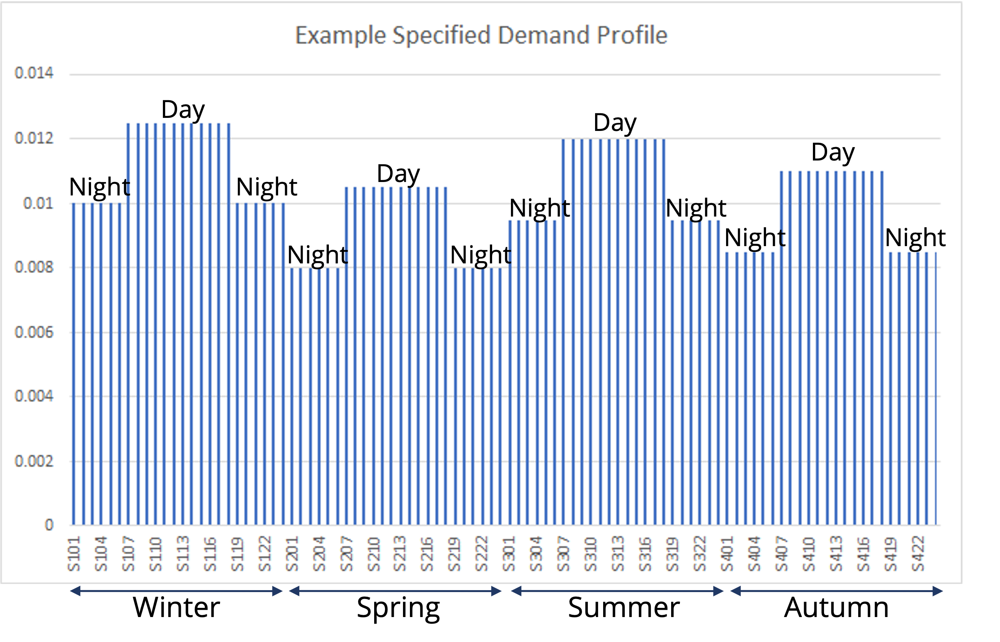

Mini-lecture 3.4 presents a case study on collecting infrastructure data for performance evaluation using the island of Curaçao. The mini-lecture outlines the data collection method utilised in Curaçao’s most recent infrastructure development assessment and provides examples of the infrastructure data inputted.
Figure 3.1.5 shown an example demand profile for electricity that could be used in MUSE. In this demand profile there are 96 bars. One for each of the timeslices used in MUSE. These timeslices are split into 12 different sections - seasonal and into day and night. The demand profile is used to represent the proportion of demand occuring in each timeslice.

Figure 3.1.5: Example demand profile for MUSE
The chart shows us that electricity demand, in this example, is highest during the day in winter. While it is lowest during the night in spring. However, it is important to note that this is a simplification: in reality demand varies in the season and with each hour of the day. This simplification meanst hat we model one representative day for each season, and we assume equal demand within days and nights of those seasons.
Whilst this is a simplification, it allows us to consider the variation in demand across seasons and days without having an incredibly complex model structure. This reduces the amount of time required to run a full model if it were to have timeslices for each hour and day of the year.
We must ensure that during our data input process we are consistent with our units. Usually we will use the petajoules unit as this is the unit for energy for different sectors. If you were just modelling the power sector, you could use megawatt hours.
When using energy modelling tools it is important to remember the difference between power and energy. Sometimes these terms are used interchangeably. However, there is an important difference between the two:
Therefore, energy and power have different units. For example, energy is often measured in Joules, while power is often measured in Joules per Scond (or Watts).
For example, providing the weight stays the same, lifting a weight requires the exact same amount of energy no matter how quickly we lift it. However, if we lift the weight more quickly, the power has increased. We used the same amount of energy, but over a shorter amount of time.
It is important that we convert our data from different sources to petajoules (PJ) when we include it in MUSE.
Here are some example conversion factors:
We must ensure that we are consistent with the units we use within MUSE.
In this lecture we have understood the difference between power and energy. We have also learnt how to use timeslicing to speed up our model and reduce complexity. Finally, we learnt that we must use consistent units. # Bibliography